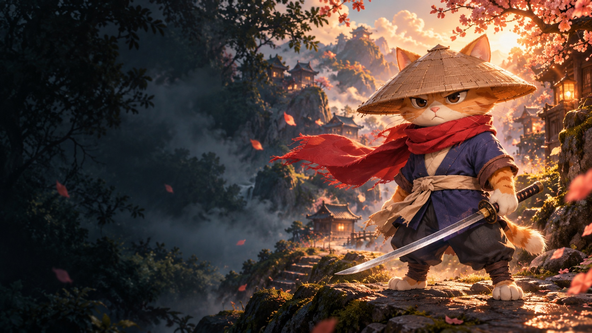

INDEPENDENT GAME STUDIO
작은 순간에,
오래 남는 세계.
LITTLE WORLDS. LASTING WONDER.SCROLL TO DISCOVER
우리의 작은 세계
01 — 02 / OUR GAMES01 / LUELI 베타 테스트 중
A QUIET LITTLE PUZZLE
lueli
작은 빛으로 완성하는 밤.

02 / CATBLADE출시 준비 중
A LITTLE HERO. A BIG ADVENTURE.
CATBLADE
작은 고양이, 지켜야 할 커다란 세상.
서로 다른 두 세계, 같은 마음으로.각 게임을 눌러 더 가까이 만나보세요.
잠깐의 플레이가
좋은 기억으로 남도록.
눈길이 머무는 작은 빛, 손끝에 전해지는 리듬,
다음 장면이 궁금해지는 이야기.
tricksy bros는 그 작은 순간들을 정성껏 만듭니다.